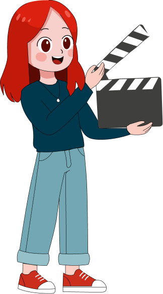
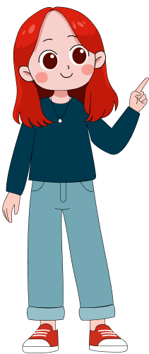
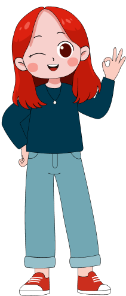
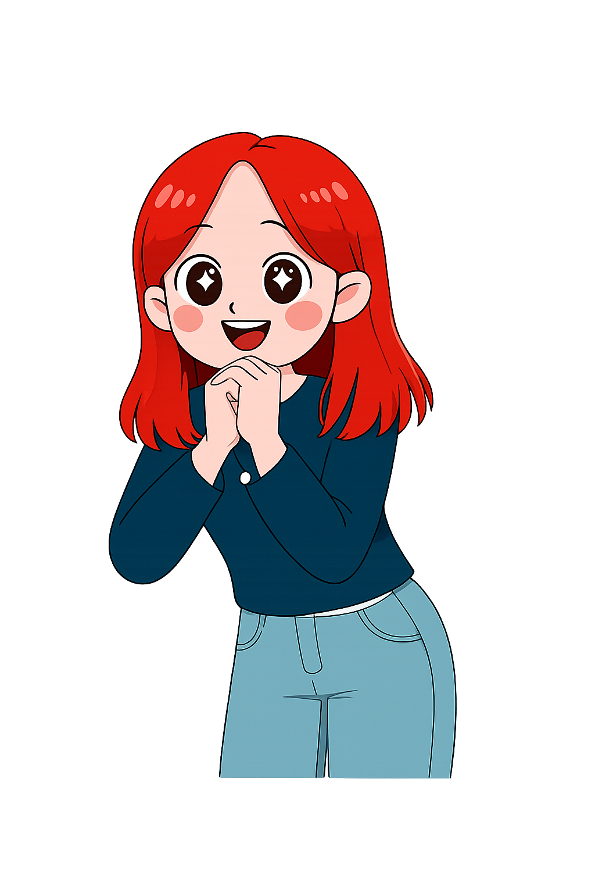

Portfolio

¡Bienvenido!
Te presento mis mejores trabajos
Me especializo en crear experiencias audiovisuales que combinan narrativa, diseño y movimiento.
Cada proyecto cuenta una historia única. ¡Exploralos!

¡Gracias por estar acá y ser parte de este viaje creativo!

★ Proyecto destacado
Mi proyecto más importante
Dímelo Díaz es un proyecto que marcó un antes y un después en mi carrera

Este proyecto significa muchísimo para mí.
